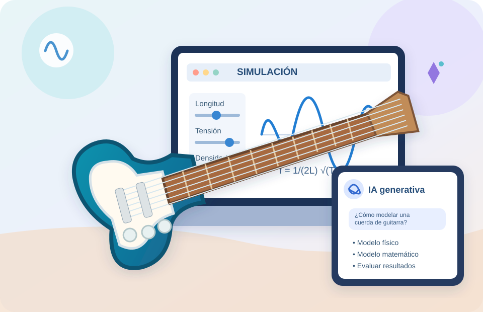

ACTIVIDAD 01 · LABORATORIO REAL
¿Qué hace que una guitarra eléctrica «funcione»?
Experimentar con cuerdas de distintos materiales y construir una recomendación fundamentada para el/la lutier.
Del laboratorio real a la simulación y la inteligencia artificial generativa.
Un espacio para explorar, experimentar, modelizar y construir criterios para pensar la enseñanza de la Física con distintas tecnologías.
Explorar el recorrido →
Resolver problemas de Física implica mucho más que encontrar una respuesta correcta. Supone explorar fenómenos, formular preguntas, construir explicaciones, establecer relaciones, elaborar modelos, realizar predicciones y fundamentar decisiones a partir de evidencias.
Hoy contamos con distintas tecnologías que amplían nuestras posibilidades para hacerlo: dispositivos experimentales, simulaciones computacionales e inteligencia artificial generativa (IAg). Cada una ofrece formas particulares de interactuar con los fenómenos, representar su comportamiento y construir conocimiento.
Pero su incorporación también nos plantea interrogantes para la enseñanza: ¿qué cambia cuando experimentamos con un dispositivo real o con una simulación?, ¿qué posibilidades y limitaciones presenta cada tecnología?, ¿qué ocurre con nuestra actividad cognitiva cuando una IAg puede ayudarnos a construir modelos y simulaciones?, ¿qué necesitamos hacer nosotros para aprender?
Este taller propone un espacio para experimentar, resolver problemas, construir modelos y reflexionar sobre los procesos de aprendizaje que promovemos al trabajar con distintas tecnologías.
No buscamos simplemente aprender a utilizar herramientas tecnológicas, sino construir criterios para decidir cuándo, para qué y cómo incorporarlas en la enseñanza de la Física.
1. Experimentar con un dispositivo real. ¿Cómo construimos evidencias para explicar un fenómeno y fundamentar decisiones?
2. Experimentar con una simulación. ¿Cómo exploramos relaciones, construimos modelos y realizamos predicciones a partir de una representación del fenómeno?
3. Construir una simulación con IAg. ¿Cómo podemos aprovechar la IAg para construir una simulación que nos permita investigar un fenómeno físico? ¿Qué decisiones necesitamos tomar y cómo podemos evaluar la validez del modelo y de la simulación construida?
Estas experiencias nos permitirán analizar cómo cambian las posibilidades de exploración, modelización y resolución de problemas, así como las actividades intelectuales que desarrollamos al utilizar cada tecnología.
Trabajaremos a partir de un problema común: el diseño y funcionamiento de una guitarra eléctrica. A lo largo del recorrido, experimentaremos con un dispositivo real, utilizaremos una simulación interactiva y construiremos nuevas simulaciones con ayuda de la IAg.
La pregunta que atravesará nuestro trabajo será:
¿Cómo podemos aprovechar las posibilidades de distintas tecnologías para promover aprendizajes de Física sin perder de vista los procesos cognitivos que necesitamos que nuestros estudiantes desarrollen?
Esperamos que este espacio nos permita experimentar, preguntar, discutir, revisar nuestras ideas y construir juntos criterios para pensar la enseñanza de la Física con tecnologías.
Partimos de una situación de diseño de una guitarra para explorar distintas formas de construir conocimiento y tomar decisiones. Cada tecnología abre posibilidades específicas: no se trata de reemplazar una por otra.
Diseñar pruebas, observar, obtener evidencias y fundamentar una recomendación.
Controlar variables, identificar relaciones y elaborar predicciones.
Decidir qué investigar y analizar qué trabajo intelectual asumimos, compartimos o delegamos.
Abrí cada consigna en una pestaña nueva. La página del taller permanecerá disponible para seguir el recorrido.
Experimentar con cuerdas de distintos materiales y construir una recomendación fundamentada para el/la lutier.
Explorar las variables que determinan la frecuencia de una cuerda, construir relaciones y tomar decisiones.
Diseñar una simulación con IAg y reflexionar sobre las decisiones y los procesos cognitivos implicados.
Más allá de la herramienta utilizada, nos interesa qué hacen los participantes para construir explicaciones, fundamentar decisiones y evaluar sus resultados.
Intervenir sobre el fenómeno, obtener datos y construir evidencias.
Experimentar sobre una representación y analizar los alcances del modelo.
Construir y revisar modelos, ejercer pensamiento crítico y regular la delegación de decisiones.
Los datos no hablan por sí solos: adquieren valor cuando los interpretamos a la luz de preguntas, modelos y argumentos.
Una representación permite explorar relaciones, pero requiere reconocer supuestos, límites y condiciones de validez.
La plausibilidad de una respuesta no garantiza su corrección. Las propuestas deben contrastarse con conocimientos y evidencias.
Importa no solo qué hacemos con la tecnología, sino qué decisiones conservamos, compartimos y delegamos.
¿Qué conocimientos, relaciones y modelos construimos cuando resolvemos problemas con diferentes tecnologías?
¿Qué procesos cognitivos ejercemos y cuáles dejamos en manos de los dispositivos o de la IAg?
El valor didáctico de una tecnología depende de las actividades intelectuales que permite promover, sostener y evaluar.
Explorá la frecuencia de una cuerda con controles y registro de ensayos.
Abrir simulación ↗Los tres documentos están disponibles desde las tarjetas de actividades. Los vínculos se actualizarán a los PDF de Drive.
Ir a actividades ↑Las actividades se sustentan en una trayectoria de investigación sobre resolución de problemas, experimentación, modelización y mediaciones tecnológicas en la enseñanza de la Física.